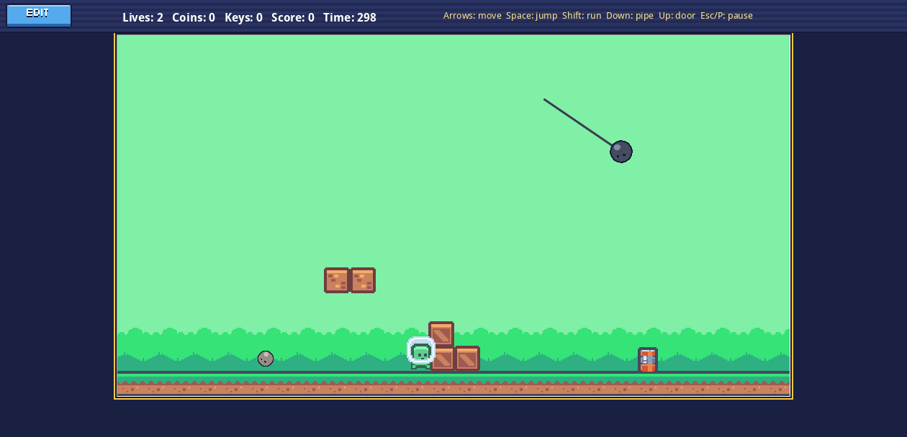
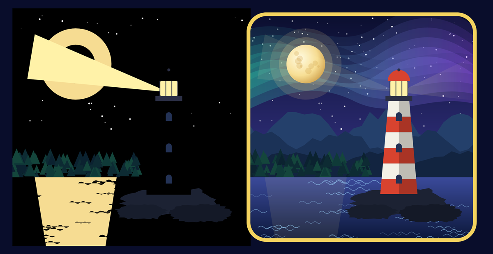

Web games
Made with OXT-Beyond and xTalk Script, running in your browser with nothing to install.

Pixel Platformer Maker
A platformer and level maker with real Box2Dxt physics. Play eight levels, then build your own.

SVG Lab
Every new SVG feature, with its tests: style sheets, clip paths, gradients, export, convert to graphics and live vector drawing. Try your own SVG.